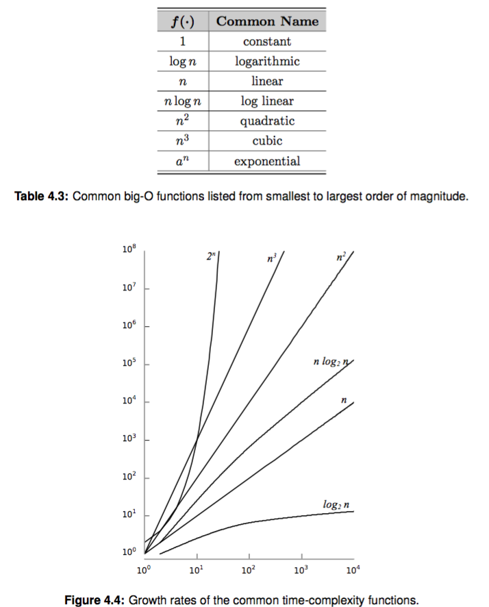

算法复杂度分析¶
前面我们说了很多次时间复杂度是 O(1), O(n) 啥的，并没有仔细讲解这个 O 符号究竟是什么。 你可以大概理解为操作的次数和数据个数的比例关系。比如 O(1) 就是有限次数操作，O(n) 就是操作正比于你的元素个数。 这一章我们用更严谨的方式来定义它。
大 O 表示法¶
我们从一个计算矩阵的例子来引入，这里我参考了 《Data Structures and Algorithms in Python》 中给的一个例子:
考虑计算一个 n * n 矩阵所有元素的和（如果你不知道矩阵，就理解为一个二维数组）：
这里列举两种方式:
1 2 3 4 5 6 7 8 9 10 11 12 13 14 15 | # version1 total_sum = 0 for i in range(n): row_sum[i] = 0 for j in range(n): row_sum[i] = row_sum[i] + matrix[i, j] total_sum = total_sum + matrix[i, j] # version2 total_sum = 0 for i in range(n): row_sum[i] = 0 for j in range(n): row_sum[i] = row_sum[i] + matrix[i, j] total_sum = total_sum + row_sum[i] # 注意这里和上边的不同 |
v1 版本的关键操作在 j 循环里，两步加法操作，由于嵌套在第一个循环里，操作步骤是 $ (2n) * n = 2n^2 $。
v2 版本的 total_sum 只有 n 次操作，它的操作次数是 $ n + n*n = n^2 + n $。
这里你可能还感觉不到它们有多大差别，因为计算机执行的太快了，但是当 n 增长特别快的时候，总的操作次数差距就很明显了：
| n | $ 2n^2 $ | $ n^2 +n $ |
|---|---|---|
| 10 | 200 | 110 |
| 100 | 20,000 | 10,100 |
| 1000 | 2,000,000 | 1,001,000 |
| 10000 | 200,000,000 | 100,010,000 |
| 100000 | 20,000,000,000 | 10,000,100,000 |
通常我们不太关注每个算法具体执行了多少次，而更关心随着输入规模 n 的增加，算法运行时间将以什么速度增加。为此计算机科学家定义了一个符号， 用来表示在最糟糕的情况下算法的运行时间，大 O 符号，在数学上称之为渐进上界（《算法导论》）。
如何计算时间复杂度¶
上边我们列举了两个版本的计算矩阵和的代码，你看到了两个公式:
- v1: $ 2n*n = 2n^2 $
- v2: $ n + n*n = n + n^2 $
当 n 非常大的时候，$ n^2 $ 的数值这里将占主导，我们可以忽略 n 的影响
- v1: $ 2n*n = 2n^2 $
- v2: $ n + n*n = n + n^2 \leq 2n^2 $
这里我们可以认为两个算法的时间复杂度均为 $ O(n^2) $
常用时间复杂度¶
这里我们列举一些常用的时间复杂度，按照增长速度排序，日常我们的业务代码中最常用的是指数之前的复杂度，指数和阶乘的增长速度非常快， 当输入比较大的时候用在业务代码里是不可接受的。
| O | 名称 | 举例 |
|---|---|---|
| 1 | 常量时间 | 一次赋值 |
| \log n | 对数时间 | 折半查找 |
| n | 线性时间 | 线性查找 |
| n\log n | 对数线性时间 | 快速排序 |
| n^2 | 平方 | 两重循环 |
| n^3 | 立方 | 三重循环 |
| 2^n | 指数 | 递归求斐波那契数列 |
| n! | 阶乘 | 旅行商问题 |
空间复杂度¶
相比时间复杂度，空间复杂度讨论比较少。因为用户老爷等不及，况且现在存储越来越白菜价了，更多时候我们为了提升响应速度宁可多 使用点空间。 空间复杂度相对好算一些，就是每个元素的空间占用乘以总的元素数，有些算法需要额外的空间存储，有些可以本地解决。 如果能本地搞定的我们成为 in place 的，原地操作，比如交换一个 数组中的某两个位置的元素。但是有些操作可能就需要申请额外的空间 来完成算法了，后边我们介绍排序算法的时候会讲到。
常见复杂度增长趋势图¶
为了让你有个直观的感觉，我们来看看一些经典的时间复杂度和对应的增长趋势图，不同函数在输入规模增长的时候很快就会有巨大的增长差异

时间换空间，空间换时间¶
有一些时候时间和空间两者不可兼得，我们会牺牲其中之一来换取另一个。
空间换时间：比如典型的就是 python 中的集合（后面会讲到它的实现原理），虽然它比较浪费空间，但是却能用 O(1) 的时间复杂度来判重。
时间换空间：当我们空间不够用，典型的就是缓存失效算法，我们不可能缓存下无限容量的数据，就会使用一些缓存淘汰算法来保证空间可用。
思考题¶
- 回头看看前几章我们讲到的数据结构，以及每个操作的时间复杂度，你能理解了吗？
- 二分查找是针对有序元素的一种经典的查找算法，你知道的它的时间复杂度吗？你能简单证明下吗。
- 斐波那契数列你肯定很熟悉，它的公式是 F(n) = F(n-1) + F(n-2)，你知道计算一个斐波那契数 F(n) 的时间复杂度吗？你会用数学公式证明吗？
- 你能指出时间和空间权衡的例子吗？往往很多高效的数据结构能同时兼顾时间和空间复杂度，但是有时候我们却得做出一定的权衡
参考资料¶
如果你对数学感兴趣，建议你阅读《算法导论》『函数的增长』这一节 和《Data Structures and Algorithms in Python》第4章。
(本章我用了 MathJax 来书写一些简单的数学公式，使用 "$"包含起来的就是数学公式)